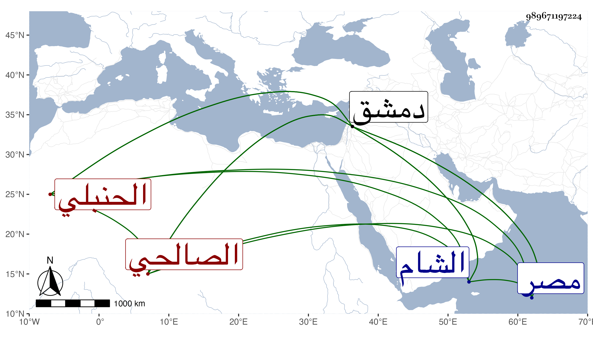

0902Sakhawi.DawLamic.ITO20230111-ara1.EIS1600.989671197224
Biography ID: 989671197224
إبراهيم بن محمد بن مفلح بن محمد بن مفرح بن عبد الله تقي الدين ويقال برهان الدين بن العلامة شمس الدين الصالحي الحنبلي والد الصدر أبي بكر والنظام عمر الآتيين ويعرف كأبيه بابن مفلح . ولد سنة إحدى وخمسين وسبعمائة ونشأ فحفظ القرآن وكتبا وأخذ عن أبيه والجمال المرداوي وغيرهما كأبي البقاء وسمع من أبي محمد بن القيم والصلاح بن أبي عمرو الفرضي وابن الجوخي وأحمد بن أبي الزهر ورحل بعد الستين إلى مصر فسمع بها من القلانسي والخلاطي وناصر الدين الفارقي ونحوهم ومهر وتكلم على الناس فاجاد ودرس فأفاد وولي قضاء الحنابلة بدمشق فحمدت سيرته وكان فاضلا بارعا بل إماما فقيها عالما بمذهبه دينا أفتى ودرس وجمع وشاع اسمه واشتهر ذكره ولما طرق اللنك الشام كان ممن تأخر بدمشق فخرج إليه وسعى في الصلح وتشبه بابن تيمية مع غازان وكثر ترداده إليه رجاء الدفع عن المسلمين ثم رجع إلى دمشق وقرر مع أهلها ما رامه من الصلح فلم يجب سؤاله وغدروا به وضعف عند رجوعهم . وكانت وفاته بعد الفتنة بأرض البقاع في أواخر شعبان سنة ثلاث . قاله شيخنا في أنبائه قال وقد لقيته وسمعت منه قليلا ولم يخلف بعده في مذهبه ببلده مثله . وكذا قال في معجمه أنه انتهت إليه رياسة المعرفة بمذهبه وأن لقيه له كان بالجامع المظفري فذاكره وقرأ عليه المسلسلات للابراهيمي بشرط التسلسل انتهى . وقد سمعتها من لفظ شيخنا عنه . وممن ذكره لكن باختصار جدا التقى الفاسي في ذيل التقييد وكذا المقريزي في عقوده رحمه الله وايانا .
